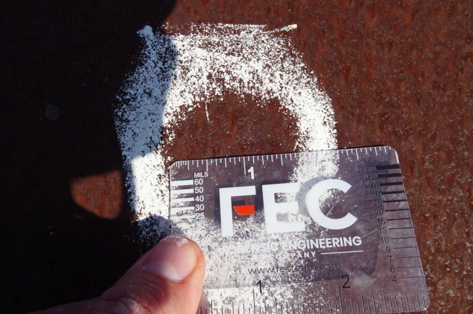

Select Photographs Taken By FEC
Site Visit Dates: July 28 and 29, 2021
the example div
the example div
the example2 div
Photograph [1/17] - P08-B06 Dog Trot #1 - Overview of indentations in roof panels on north roof slope. - Type: Standing Seam (Corroded) [2021-07-28 / DSC05165.JPG]
Photograph [2/17] - P08-B06 Dog Trot #1 - Indentation measuring approximately 1-1/8" across. White chalk by FEC onsite. - Type: Standing Seam (Corroded) [2021-07-28 / DSC05179.JPG]
Photograph [3/17] - P08-B06 Dog Trot #1 - Overview of indentations in roof panels on north roof slope. - Type: Standing Seam (Corroded) [2021-07-28 / DSC05199.JPG]
Photograph [4/17] - P08-B06 Dog Trot #1 - Burnish/spatter marks on south roof slope. - Type: Standing Seam (Corroded) [2021-07-28 / DSC05217.JPG]
Photograph [5/17] - P08-B12 Two Creek Gun Room - Indentations in roof panels. - Type: Corrugated Steel [2021-07-28 / DSC05290.JPG]
Photograph [6/17] - P08-B12 Two Creek Gun Room - Indentation in metal panel measuring approx 0.75" across. - Type: Corrugated Steel [2021-07-28 / DSC05277.JPG]
Photograph [7/17] - P08-B01c Abandoned Structure - Overview of roof. - Type: Standing Seam [2021-07-28 / DSC05127.JPG]
Photograph [8/17] - P08-B10b Tower - Typical dents on the west-facing slope. - Type: Corrugated (Corroded) [2021-07-28 / DSC05045.JPG]
Photograph [9/17] - P08-B06 Dog Trot #1 - Partially deformed seam. - Type: Standing Seam (Corroded) [2021-07-28 / DSC05237.JPG]
Photograph [10/17] - P08-B12 Two Creek Gun Room - Indentation measuring approximately 1.5" long overall. - Type: Corrugated Steel [2021-07-28 / DSC05274.JPG]
Photograph [11/17] - P08-B10a Main Building - 0.5 inch wide spatter mark on the west elevation. - Type: General [2021-07-28 / DSC04948.JPG]
Photograph [12/17] - P08-B12 Two Creek Gun Room - Dent in the corrugation at ridge; note the surface has a glossy sheen and is not corroded. - Type: Corrugated Steel (Painted) [2021-07-28 / DSC05306.JPG]
Photograph [13/17] - P08-B12 Two Creek Gun Room - Gap between roof panels at roof panel overlap. - Type: Corrugated Steel (Painted) [2021-07-28 / DSC05303.JPG]
Photograph [14/17] - P08-B12 Two Creek Gun Room - Dents up to 1.25" along the corrugation. - Type: Corrugated Steel (Painted) [2021-07-28 / DSC05275.JPG]
Photograph [15/17] - P08-B10a Main Building - Dents up to 2.0 inch overall in diameter on the north-facing slope. - Type: Standing Seam (Aluminized) [2021-07-28 / DSC04983.JPG]

Photograph [16/17] - P08-B06 Dog Trot #1 - 1.75 inch overall dent in the north-facing slope. - Type: Standing Seam (Corroded) [2021-07-28 / DSC05251.JPG]
Photograph [17/17] - P01-B01a Behind Gristmill - 0.5 inch wide spatter mark on vertical surface. - Type: General [2021-07-28 / DSC05122.JPG]